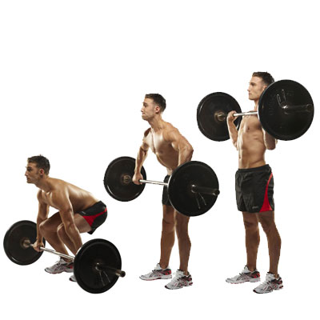

Weightlifting can be used for many different purposes such as losing weight, gaining size, becoming more toned, or endurance improvement. When combined with a proper diet (with some weightlifters even tracking their macros daily), weightlifting is one way many have achieved personal goals.
My personal goal is to put on some size. So for most of my lifts, I try and use higher weight with medium to higher numbers of repetitions.
And generally with a goal similar to mine protein intake is crucial. Generally I try to consume at least a gram of protein per pound of body weight. I currently weigh 170 pounds, so my preferred daily goal is between 170 and 200 grams of protein per day.
As far as my workouts, I try and plan to workout between 45 minutes and an hour and focusing on a specific muscle group. Sometimes I divide between just push and pull muscles, but if I am pressed for time, I divide each of those groups into upper and lower body.
